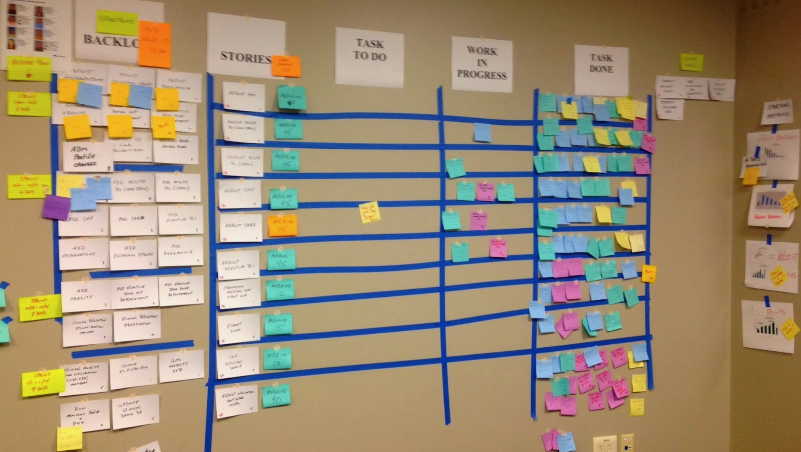
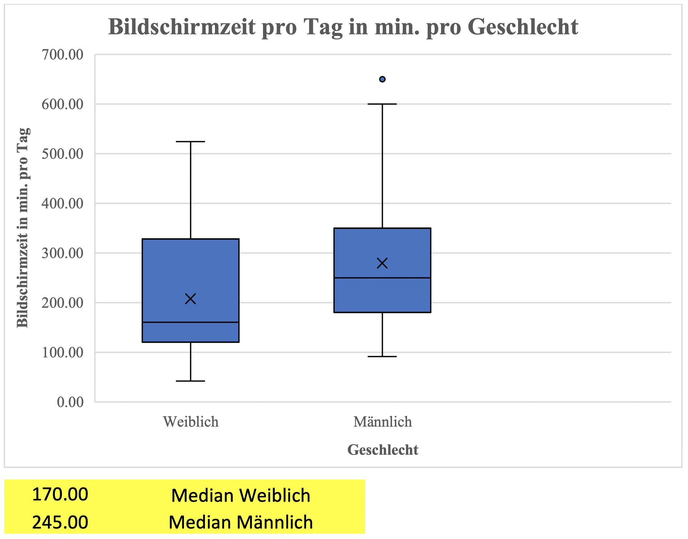
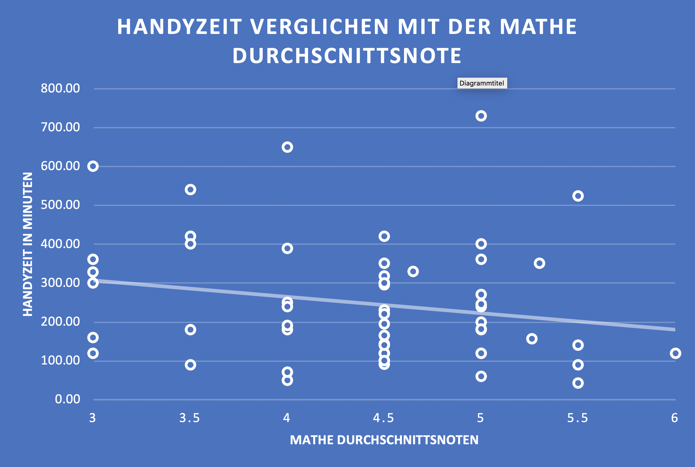
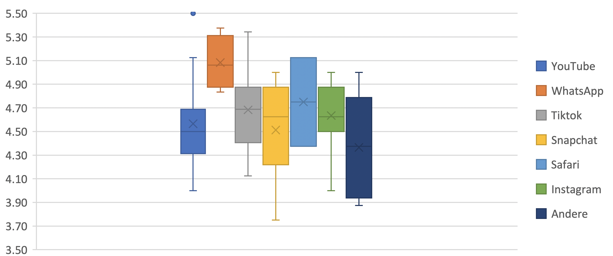
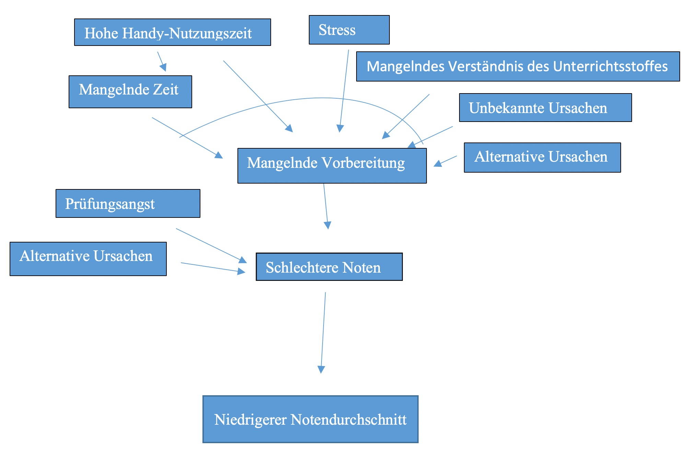

Ein entscheidender Vorteil von Scrum ist, in den Worten des Erfinders Jeff Sutherland, dass das Projektteam schnelle Feedbackmechanismen durchläuft, wodurch es feststellen kann, ob und wo es Anpassungen in der Vorgehensweise und im Produkt braucht.
«Fail fast so you can fix early.»
Die Teams geben in ScrumBoards transparent Einblick in ihren Arbeitsprozess:
 Sergeev, Alexander. “Scrum Task Board.” Hygger, 21 June 2016Hängen Jungs länger am Smartphone als Mädchen? Schreiben Verliebte schlechtere Noten als Nicht-Verliebte? Hat der Zivilstand der Eltern einen Einfluss auf die Noten der Kinder? Sind Mädchen warmherziger als Jungs? Haben Sternzeichen einen Einfluss auf die emotionale Stabilität eines Menschen?
Im Rahmen des Philosophiekurses haben die Schüler*innen der 3. Klassen im Frühling 2020 eigene Research Projects zum Thema «Wie ticken die Drittklässler des Gymi Immensee?» verfolgt. Das Ziel bestand darin, die erworbenen Fertigkeiten im Umgang mit Excel und das Wissen in Bezug auf die wichtige Unterscheidung zwischen Kausalität und Korrelation in einer eigenen Mini-Studie anwenden. Am 1. und 2. April beantworteten allen Schüler*innen eine Umfrage mit über 50 Fragen. Den daraus resultierenden Datensatz verwendeten alle Teams um herauszufinden, wie die 3. Klassen ticken.
Die Forschungsgruppe rund um Noelle, Maxime und Chiara beschäftigte sich mit der Frage, ob Mädchen das Smartphone häufiger nutzen als Jungs. Eine Studie, auf die sie in ihrer Recherche stiessen, behaupte diesen Zusammenhang. Er widersprach aber den Erfahrungen, die sie selber gemacht haben. Darum versuchte die Forschungsgruppe die Resultate zu reproduzieren, was nicht gelange. Noelle, Maxime und Chiara fanden heraus, dass die Bildschirmzeit der Jungs am Gymnasium Immensee signifikant (p=0.048) höher ist, als jene der Mädchen.
 Noelle, Maxime und ChiaraJil, Liana, Angela und Elin konnten in ihrer Studie zeigen, dass ein negativer Zusammenhang besteht zwischen der Handynutzung und dem Notendurchschnitt in Mathematik, das heisst, je länger eine Schülerin oder ein Schüler das Smartphone nutzt, desto schlechter sind die Mathematiknoten dieser Personen. Die Forschungsgruppe fand aber auch heraus, dass die Resultate nicht signifikant sind (p=0.19), das heisst zu über 5% Wahrscheinlichkeit eine Folge von Zufall sind.
 Jil, Liana, Angela und ElinEnrico, Maurice, Lorenz aus der Klasse 3b haben im Rahmen ihres Forschungsprojekts analysiert, ob sich ein Zusammenhang zwischen der Nutzung einer bestimmten App und dem Notendurchschnitt an der Schule aufzeigen lässt. Die Hypothese, die sie aufstellten, war, dass YouTube den grössten negativen Einfluss auf die Noten habe, weil YouTube im Gegensatz zu Snapchat ein bekannter Zeitfresser sei.
 Enrico, Maurice, LorenzDie Hypothese konnte vom Forschungsteam nicht bestätigt werden. Schüler*innen, die am häufigsten YouTube konsumieren, besassen im Median sogar die besseren Notendurchschnitte als Schüler*innen, die am häufigsten Snapchat nutzen.
Die Forschungsteams beschränkten sich in ihrer Arbeit nicht darauf statistische Zusammenhänge zu untersuchen, sondern hatten auch die Aufgabe über die allfällig zugrundeliegenden Kausalzusammenhänge nachzudenken. Deshalb fertigten sie hierzu Kausalgraphen an. Nachfolgend ist ein Kausalgraph zum vermuteten Zusammenhang zwischen der Handy-Nutzungszeit und dem Notendurchschnitt dargestellt. Die Pfeile sind als «kausale Relevanz» zu deuten, die Bogen symbolisieren ein Ursachenbündel.
 Jil, Liana, Angela und Elin